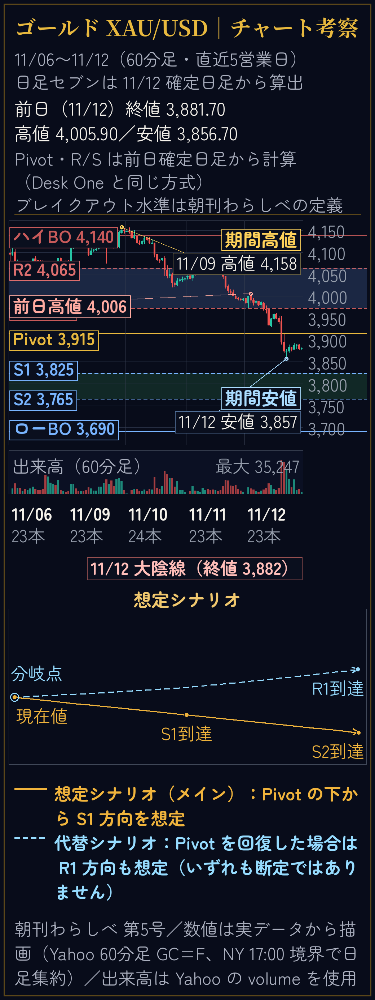
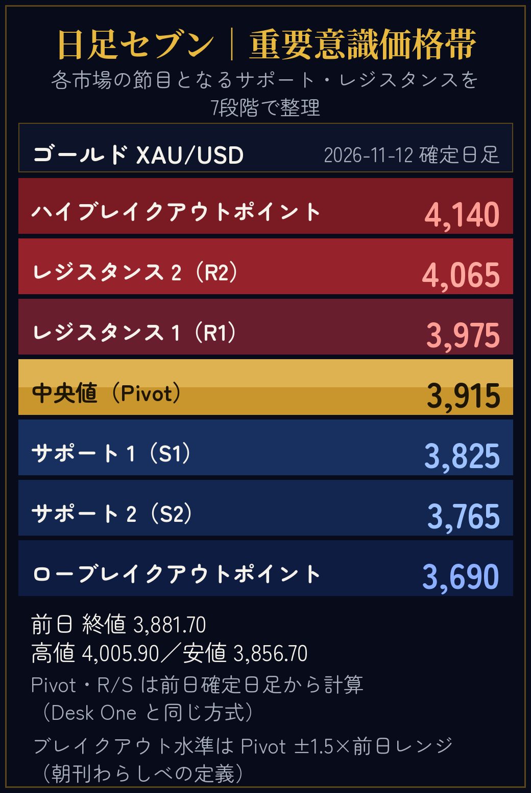

図の文字を「本文並み」にできるか｜比較
スマホの表示幅 360px の枠で並べています。図は画像なので、画面での見かけの文字サイズは「図のフォントpx ×（表示幅 ÷ 図の幅）」で決まります。LINEの本文は約16px相当です。
基準：本文テキストの見本（16px）
今日の本文テキストはこの大きさです。ゴールドはPivot 3,915を軸に、S1 3,825方向を想定します（いずれも断定ではありません）。
これが「本文並み」の基準です。以下の図の注記は、この16pxと比べた見かけの最小文字サイズです。
現在のチャート考察図（ゴールド）

図の幅 1800px・最小フォント 26px → 表示幅360pxでの見かけは 約5.2px。本文（16px）の約3分の1しかありません。
試作のチャート考察図（ゴールド）

図の幅 1040px・最小フォント 48px → 見かけは 約16.6px。本文とほぼ同じ大きさで読めます。レイアウトはスマホ向けに組み替えました（シナリオのパネルは下へ、チップは図の中へ）。
現在の日足セブン（ゴールド）

図の幅 1040px・最小フォント 23px（脚注の注記） → 見かけは 約8.0px。本文の半分ほどです。
試作の日足セブン（ゴールド）

図の幅 1040px のまま、最小フォントを 40px に上げました → 見かけは 約13.8px。水準の値（68px）は見かけ 約23.5px、行の見出し（44px）は約15.2pxです。
※ 試作はいずれも第5号（2026-11-13）の実データで描いたもので、数字は配信した図と同じです。詳しい調整内容は制作側の報告書にまとめています。